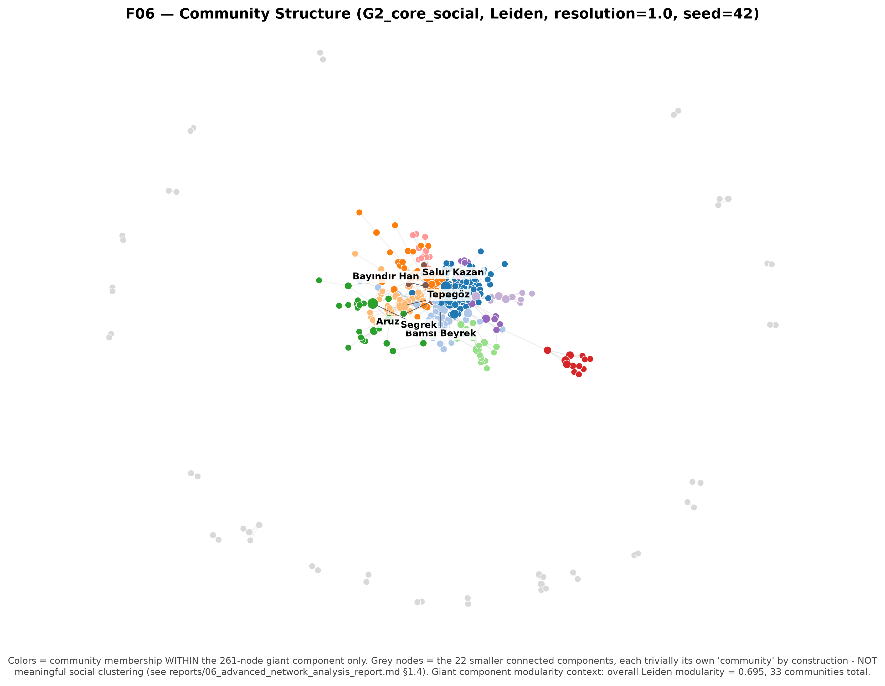

Communities
Communities are labeled with plain numeric IDs only — no cultural or
sociological names are assigned to them.
⚠️ Read this before interpreting community counts
The G2_core_social network has 23 connected components. Modularity
algorithms assign each disconnected component to its own community by construction, so a large
share of the raw community count below is a graph-fragmentation artifact, not meaningful social
clustering. The only community structure worth interpreting substantively is within the
261-node giant component. Full discussion: Analysis and
reports/06_advanced_network_analysis_report.md §1.4.
Leiden vs Louvain
33Leiden communities
0.695Leiden modularity
34Louvain communities
0.899ARI (Leiden vs Louvain)
Stability across 10 random seeds: mean modularity 0.6981 (std 0.0028), mean pairwise ARI 0.908 — the partition is highly stable across seeds.
Community sizes (Leiden, resolution=1.0)
| Community | Size |
|---|---|
| Community 0 | 72 |
| Community 1 | 36 |
| Community 2 | 33 |
| Community 3 | 30 |
| Community 4 | 23 |
| Community 5 | 15 |
| Community 6 | 12 |
| Community 7 | 11 |
| Community 8 | 11 |
| Community 9 | 10 |
| Community 10 | 6 |
| Community 11 | 5 |
| Community 12 | 4 |
| Community 13 | 3 |
| Community 14 | 2 |
| Community 15 | 2 |
| Community 16 | 2 |
| Community 17 | 2 |
| Community 18 | 2 |
| Community 19 | 2 |
| Community 20 | 2 |
| Community 21 | 2 |
| Community 22 | 2 |
| Community 23 | 2 |
| Community 24 | 2 |
| Community 25 | 2 |
| Community 26 | 2 |
| Community 27 | 2 |
| Community 28 | 2 |
| Community 29 | 2 |
| Community 30 | 2 |
| Community 31 | 2 |
| Community 32 | 2 |
Interactive view
See the community-colored network in the Network Explorer (filter by community) or the static figure below.
